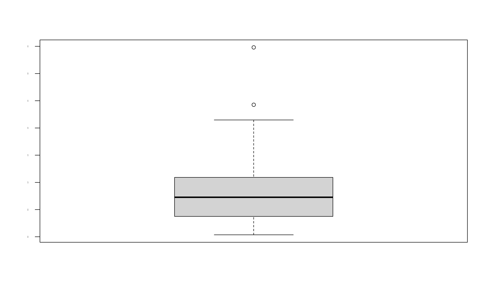
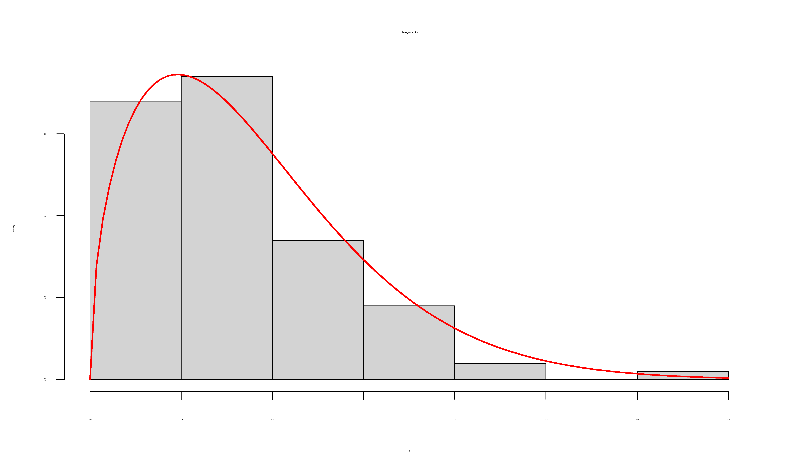
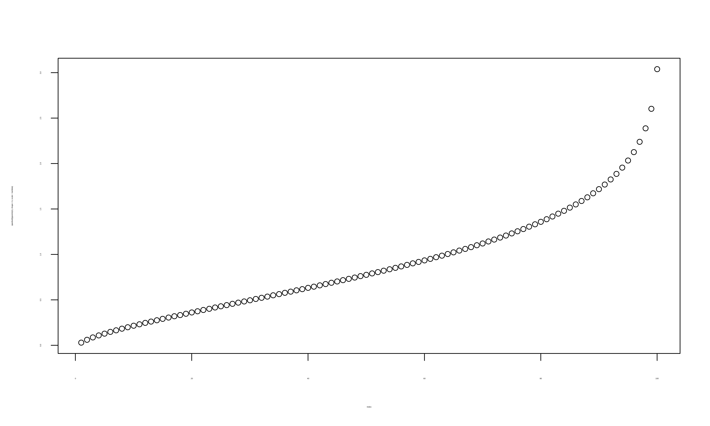
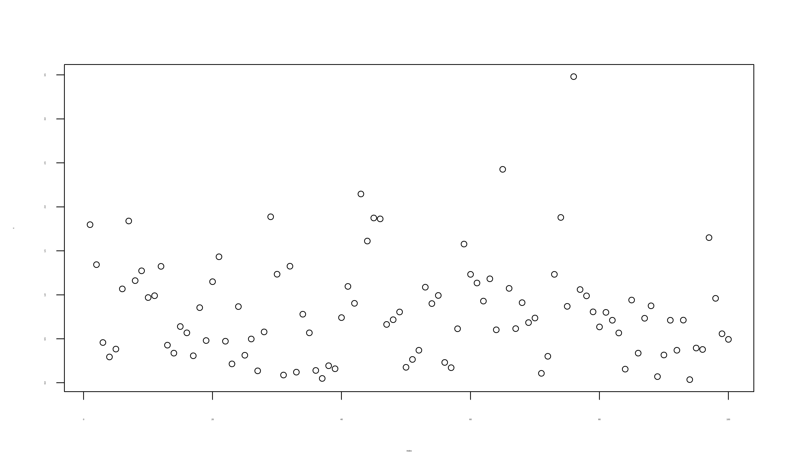
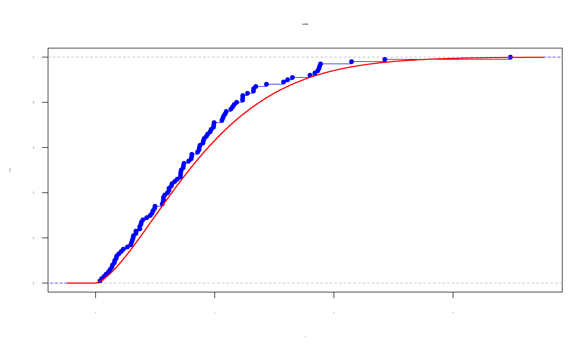
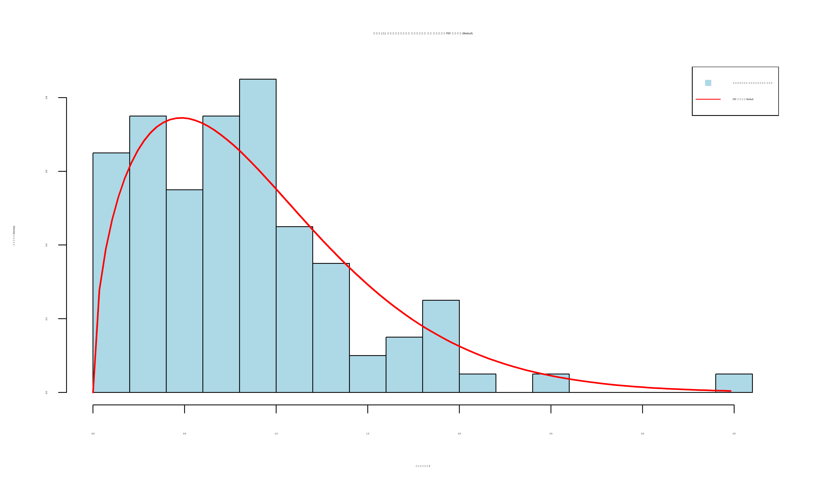
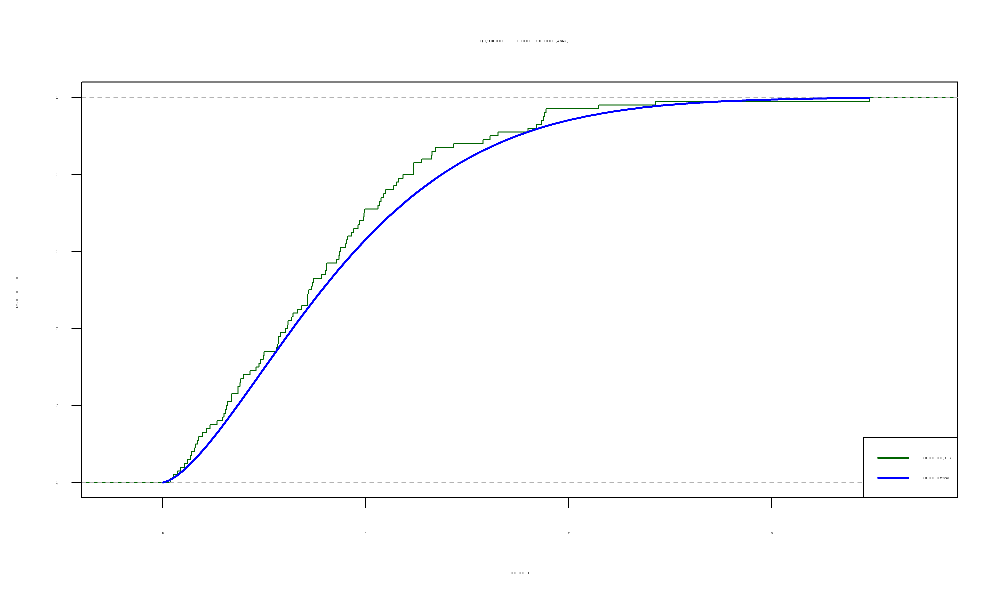
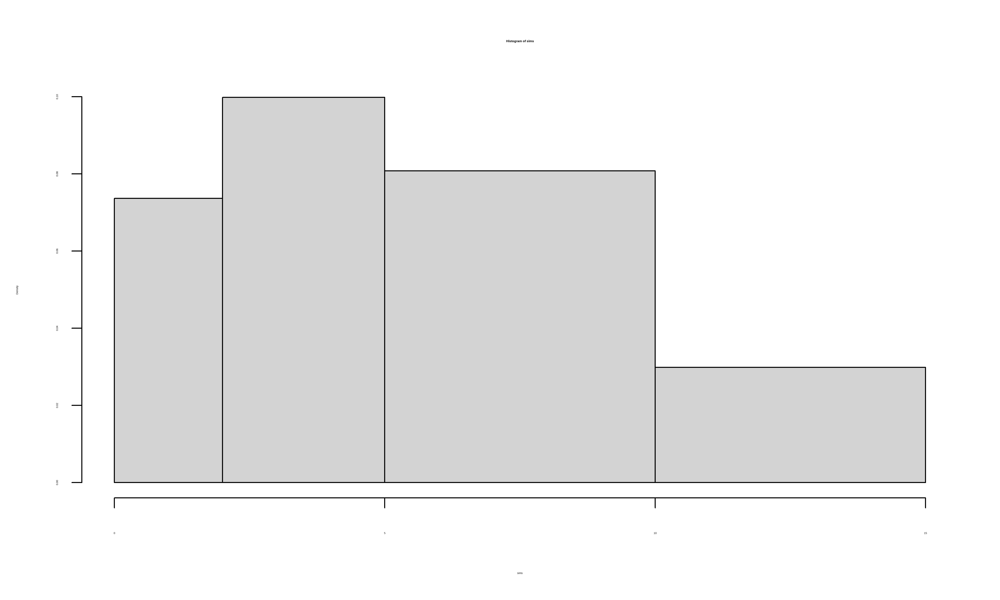

با استفاده از روش تبدیل وارون، فرمول شبیهسازی \(X\) (بر حسب یک متغیر \(U \sim \text{Uniform}(0, 1)\)) را به دست آورید.
| دست نویس حل کردم |
با استفاده از فرمول به دست آمده، یک نمونهی تصادفی ۱۰۰ تایی (\(n=100\)) از توزیع وایبول با پارامترهای \(k = 1.5\) و \(\lambda = 1\) تولید نمایید.
## [1] 0.8224484
هیستوگرام دادههای تولید شده (در حالت چگالی، نه فراوانی) را رسم کرده و نمودار تابع چگالی (PDF) نظری را بر روی آن رسم و مقایسه کنید.
hist(x, freq = FALSE)
curve(dweibull(x, shape = k, scale = lambda),
add = TRUE,
col = "red",
lwd = 2)


تابع توزیع تجمعی تجربی (ECDF) دادهها را با تابع توزیع تجمعی نظری (CDF) که در صورت سؤال داده شد، در یک نمودار رسم و با هم مقایسه کنید.
plot(ecdf(x), col = "blue")
curve(pweibull(x, shape = k, scale = lambda),
add = TRUE,
col = "red",
lwd = 2) 
set.seed(456)
n <- 100
k <- 1.5
lambda <- 1
u <- runif(n)
x <- lambda * (-log(u))^(1/k)
# نمایش چند نمونه اول
print("نمونههای وایبول تولید شده (x):")## [1] "نمونههای وایبول تولید شده (x):"## [1] 1.7989995 1.3440565 0.4587050 0.2947373 0.3837808 1.0673716hist(x,
freq = FALSE,
main = "بخش (پ): هیستوگرام دادهها در برابر PDF نظری (Weibull)",
xlab = "مقادیر X",
ylab = "چگالی (Density)",
col = "lightblue",
breaks = 15)
curve(dweibull(x, shape = k, scale = lambda),
from = 0,
to = max(x),
add = TRUE,
col = "red",
lwd = 2)
legend("topright",
legend = c("دادههای شبیهسازی شده", "PDF نظری Weibull"),
col = c("lightblue", "red"),
pch = c(15, NA),
lty = c(NA, 1)) 
plot(ecdf(x),
main = "بخش (ت): CDF تجربی در برابر CDF نظری (Weibull)",
xlab = "مقادیر X",
ylab = "F(x) - احتمال تجمعی",
verticals = TRUE,
do.points = FALSE,
col = "darkgreen")
curve(pweibull(x, shape = k, scale = lambda),
from = 0,
to = max(x),
add = TRUE,
col = "blue",
lwd = 2)
legend("bottomright",
legend = c("CDF تجربی (ECDF)", "CDF نظری Weibull"),
col = c("darkgreen", "blue"),
lwd = 2)
simulate <- function(n, pmf) {
results <- numeric(n)
k <- length(pmf)
for (i in 1:n) {
u <- runif(1)
x <- 1
cdf <- pmf[x]
while (u > cdf && x < k) {
x <- x + 1
cdf <- cdf+ pmf[x]
}
results[i] <- x
}
return(results)
}
my_pmf <- c(0.1,0.15,0.25,0.2,0.15,0.15)
sum(my_pmf) ## [1] 1set.seed(456)
sims <- simulate(n = 10000, pmf = my_pmf)
observed_probs <- table(sims) / 10000
print(observed_probs)## sims
## 1 2 3 4 5 6
## 0.0944 0.1512 0.2506 0.2070 0.1476 0.1492## [1] 0.10 0.15 0.25 0.20 0.15 0.15simulate_hist <- function(n, h, F_h) {
U <- runif(n)
j <- findInterval(U, F_h, all.inside = TRUE)
h_left <- h[j]
h_right <- h[j+1]
F_left <- F_h[j]
F_right <- F_h[j+1]
slope_h <- h_right - h_left
slope_F <- F_right - F_left
ratio <- (U - F_left) / slope_F
ratio[slope_F == 0] <- 0
X <- h_left + ratio * slope_h
return(X)
}intervals <- c(0,2,5,10,15)
rel_freq <- c(0.15,0.3,0.4,0.15)
cum_probs <- c(0, cumsum(rel_freq))
print(intervals)## [1] 0 2 5 10 15## [1] 0.00 0.15 0.45 0.85 1.00set.seed(456)
n_sims <- 10000
sims <- simulate_hist(n = n_sims, h = intervals, F_h = cum_probs)
print(summary(sims))## Min. 1st Qu. Median Mean 3rd Qu. Max.
## 0.003868 3.041711 5.670115 6.100806 8.803610 14.998755observed_counts <- table(cut(sims, breaks = intervals, right = FALSE, include.lowest = TRUE))
observed_probs <- observed_counts / n_sims
print(observed_probs)##
## [0,2) [2,5) [5,10) [10,15]
## 0.1473 0.2995 0.4040 0.1492## [1] 0.15 0.30 0.40 0.15